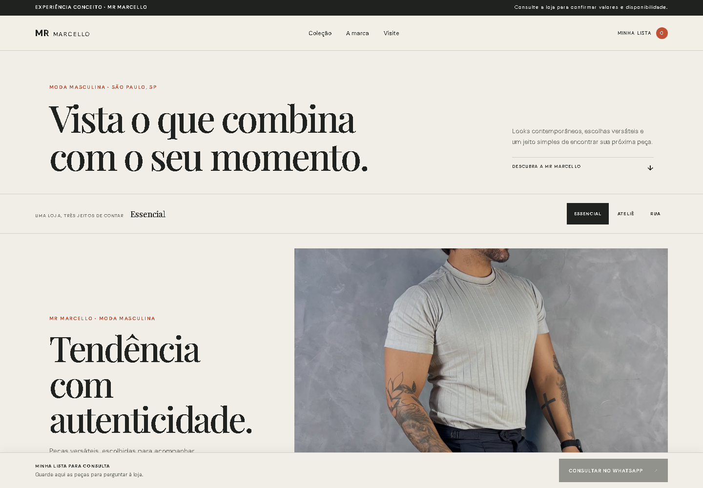
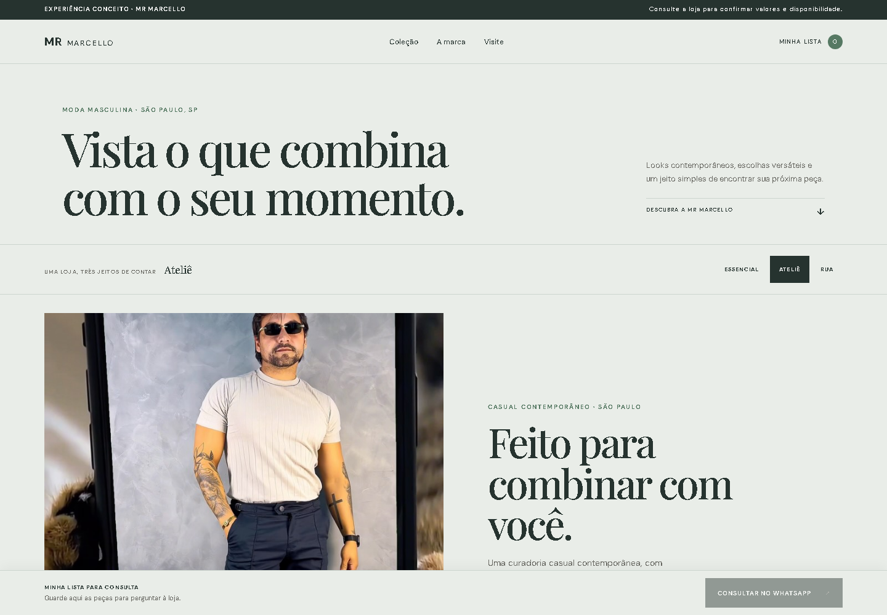
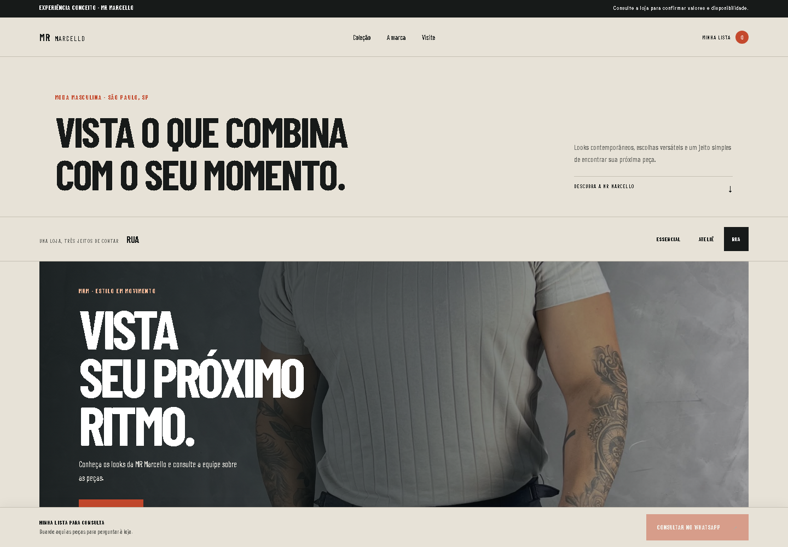

PRÉVIA DE LOJA ONLINE · TRÊS DIREÇÕES
Uma marca.
Três maneiras de vestir a experiência.
Uma vitrine digital completa para descobrir os looks publicados pela MR Marcello, conhecer a loja e consultar a equipe sobre cada peça.

Ateliê
02 · CURADORIA
Rua
03 · URBANOAs imagens dos looks estão ligadas às publicações públicas da loja. Itens, valores, tamanhos e disponibilidade precisam ser confirmados pela equipe.